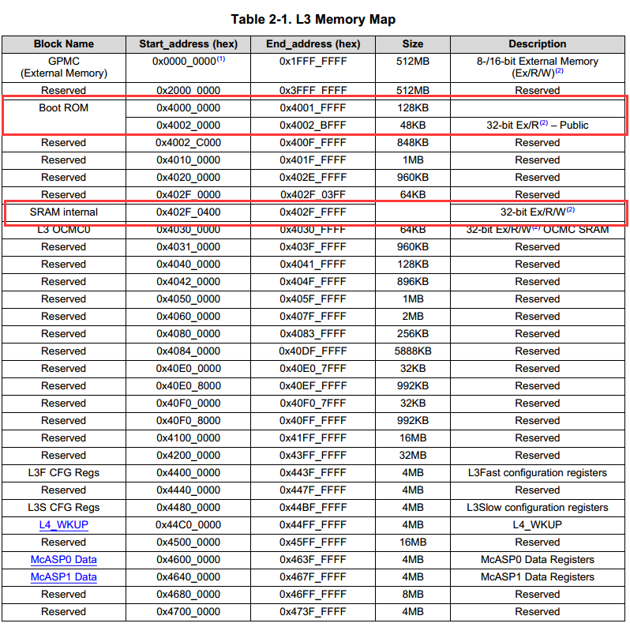
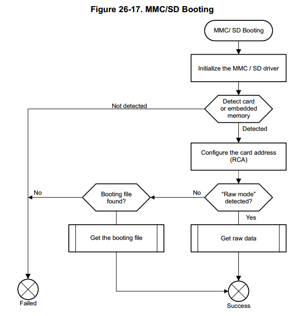
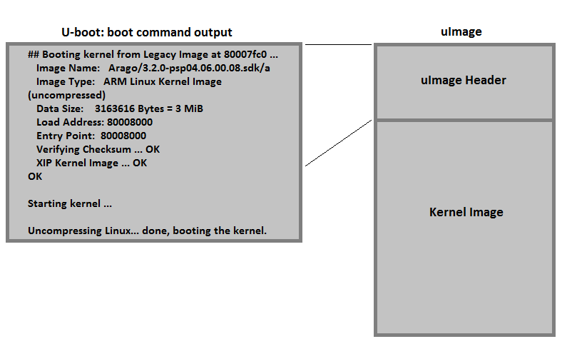

BeagleBone 的核心处理器是 AM3358，理解启动过程需要查看相应的数据手册。
AM335x 有四个不同的启动阶段：
- ROM
- SPL（Secondary Program Loader）
- U-BOOT
- Linux Kernel
为什么 AM335x 有多个启动阶段呢？直接从启动源加载 U-Boot 启动不是很方便？
首先，第一步的 ROM Code 不可能太复杂，ROM大小是一个限制，最重要的还是因为其所能获取的系统信息太少，所以处理器只能使用简单的方法去寻找能完成复杂功能的代码，而后将处理器初始化工作交给它来完成。其次，SPL 也不能很复杂，因为 ROM Code 只能将它加载到处理器内部 RAM 中运行，一般处理器的内部 RAM 都要小于128KB，其大小注定其不能完成很复杂的功能，所以 SPL 需要初始化 DDR 再加更复杂的代码加载到 DDR 中运行。到了在 DDR RAM 中执行的 Bootloader（U-Boot算一个），其功能就比较完善了，此时就可以启动操作系统了。
第一阶段：ROM Code
ROM Code 是芯片上电复位之后第一块自动运行的代码。ROM Code 固化在芯片中不能被用户修改。
ROM Code 存储在片上地址 0x40000000-0x40040000 处。

ROM Code 有两个主要的功能：
- 配置设备并初始化主要的外设
- 建立堆栈
- 配置开门狗定时器1（设置到三分钟）
- 配置 PLL 和系统时钟
- 为下一阶段启动做准备
- 为下一阶段启动检查启动源（SPL）
- 把下一启动阶段的 bootloader 代码移动到内存中准备运行
ROM Code 针对不同的启动源有不同的启动过程，但最终还是为了把启动源的代码搬运至内部 RAM 中运行，这里我们主要解析下针对 MMC/SD 卡设备，它的启动过程是怎么样的。
- 初始化 MMC/SD 驱动
- 检测是内存还是SD卡
- 配置地址
- 判断存储设备是 RAW 模式还是 FAT 模式
- 如果是 RAW 模式就按照 参考手册 Table 26-20 所定义的地址搬运代码至内部 RAM 中
- 如果是 FAT 模式，就读取主引导记录并读取启动扇区查找 MLO 文件，并搬运到 RAM 中执行

具体见参考手册第二十六章。
第二阶段：SPL
第二阶段叫做 SPL，但有些时候也叫 MLO。SPL 是启动 U-Boot 前的一个阶段，并且必须从 启动源（MMC、USB、SD、UART等）加载到内部 RAM 中。SPL 只有极少的功能，SPL 主要的职责就是初始化 DDR，时钟等最小系统，以读取 U-Boot 并加载到 DDR 中。
MLO 文件是从哪来的呢？
在编译 U-boot 的时候也会生成相应目标板的 MLO 文件，好像老版本的 U-boot 没有这功能，具体请看另外一篇文章。
第三阶段：U-Boot
U-boot 主要的工作就是正确加载 Kernel。和 SPL 类似，U-boot 也是要加载下一个阶段的 image,但是 U-Boot 提供了更多外设的支持和更多的调试工具。所以，U-Boot 也要进行各个模块的配置，上述 SPL 配置的部分，除了 DDR 外，U-Boot 也会根据需求重新配置（这里重置主要是U-Boot 是一个开源工程，其要兼容某些特殊的芯片，从而需要做重载）。此外，U-Boot 也会对网口，SD卡等根据需求进行配置。 完成配置后，U-Boot 会从相应的存储器或者外设读取 Kernel，并传递参数给 Kernel，运行 Kernel。
U-Boot 允许用户通过串行终端在内核启动环境中做一些强大的基于命令的控制。用户可以控制很多启动参数和内核启动命令。另外 U-Boot 环境变量是可配置的，这些变量保存在存储媒介的 uEnv.txt 中。
更多内容可以查看 AM335x U-Boot 用户指南。
第四阶段：启动 Linux 内核
uImage 是与描述内核头信息交换过的内核镜像。这个头信息是一个 64kB的信息块，包含了目标架构、操作系统、内核尺寸、入口等信息。U-boot 启动 uImage的时候，头信息会在命令行输出。

在读出头文件之后，U-Boot 开始启动 Linux 内核。
其他
AM335x 能从不同的源启动：MMC/SD，NAND，NOR，UART，ETHERNET，USB，SPI和I2C。能从哪个源启动由启动阶段决定。比如，SPL／U-Boot 只能从能被 ROM Code 识别的源启动。 ROM 和 SPL bootloader在内部 RAM 中运行，U-boot 和内核在 DDR 中运行。 更多信息可以看《技术参考指南》的第二章。

BeagleBone 启动
BBB 板子上的 AM3335x 处理器上可以通过配置选择不同的接口启动，如数据手册 第二十六章所写。BBB 通过 S2 这个按键选择不同的启动顺序，默认情况下（S2 没有按下）启动过程如下：
- MMC1（板载 eMMC）
- MMC0（microSD）
- UART0
- USB0
如果按下 S2 按钮，启动过程如下：
- SPI0
- MMC0（microSD）
- UART0
- USB0